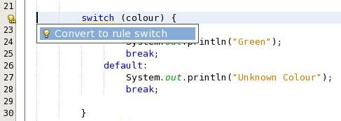
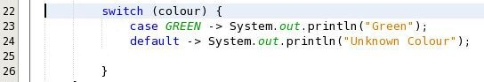

Apache NetBeans
Apache NetBeansApache NetBeans (incubating) 11.0 Features
Apache NetBeans (incubating) 11.0 is the third major release of the Apache NetBeans IDE. It was released in March, 2019. Click here to download this release. Laszlo Kishalmi has been our Release Manager.
Maven First in New Project Wizard
There’s been lots of discussion in the Apache NetBeans Community about how best to express the fact that Apache Maven and Gradle are more modern choices to be aware of than Apache Ant, while at the same time not implying that there’s anything wrong with using Apache Ant.
Discussions started back in 2018, and culminated in 2019 with the new "New Project" wizard redesign.
We have moved the previous wizard Java options to a subfolder named "Java with Ant", and added two new options: "Java with Maven" and "Java with Gradle". We hope this makes it easier for everybody to choose a build system of their liking (be it Maven, Gradle or Ant) for their projects.
For more information about the discussion and the rationale behind these choices please see this blog post.
JDK 12 support
nb-javac upgrade
As you may know, the Apache NetBeans IDE can use a special variation of a Java
compiler called nb-javac, that
greatly improves the Java support. This nb-javac tool (which is not an Apache
Project as it’s released under the GPL license) has been improved to support advanced
JDK 12 features.
Apache NetBeans Team Members
Arunava Sinha,
Sarvesh Kesharwani,
and Vikas Kumar Prabhakar
have made a
heroic effort to integrate Apache NetBeans
with this latest release of nb-javac.
Switch improvements
The switch expression handling has been greatly improved in this release.
Better formatting, better re-indentation, better syntax-highlighting,
better hints and better auto-completion.
JEP-325: Switch Expressions (Preview)
We now have JEP-325 support. In order to enable JEP-325 (and other preview features) follow these instructions:
-
Goto
Project > Properties -
Goto
Build > Compiling paneand add--enable-previewin "Additional Compiler Options". -
Goto
Runpane and add--enable-previewin VM Options
--enable-preview does not work in Maven projects in Apache NetBeans 11 as of yet, but the
issue is being tracked here.
|
Converting switch-cases to rule kind cases
There’s a new hint to convert switch-cases to rule kind classes. For instance, in this scenario:

if you choose the hint the result will be:

That’s cleaner, right?
And more
See our wiki for more
improvements to the switch expression.
Java EE support
We have been busy in the last months reviewing the licenses of the enterprise cluster, that was included in the second donation from Oracle. The review has now ended (after lots of pull requests) and we have included this cluster in Apache NetBeans 11.0.
This means that you can now build JavaEE applications with Ant, Maven or Gradle projects.
| Explicit support of Java EE 8 is not currently part of Apache NetBeans 11.0. Also, JavaEE 8 only runs on JDK 8, not on later releases, and so if you 're doing development with JavaEE 8 it’s best to run NetBeans itself on JDK 8. |
In order to comply with the Apache License we had to drop support for JBoss 4,
WebLogic 9 and the module websvc.switmodellext had to be dropped as well.
|
Gradle Support
In late December, 2018, Apache NetBeans Team Member Laszlo Kishalmi kindly donated his Gradle works to Apache NetBeans.
Since then he has been steadily working very hard to solve many issues and doing improvements.
As a result you can now:
-
Open Gradle projects out of the box.
-
Gradle Task Navigator, run tasks by double-click.
-
Gradle supported unit test frameworks (JUnit 4, 5, TestNG) works with Code Coverage with JaCoCo.
-
Gradle projects work together with NetBeans JPA and Spring Support.
-
Customizable task execution and IDE action binding.
-
Run, Debug and Test even single methods.
-
Creating new projects with Gradle.
Other enhancements
Eirik Bakke has added support for HiDPI icons for window system icons on Windows and Mac. This introduces vector-drawn icon implementations for the icons used in the window system’s Windows 8 and Aqua LAFs.
Also, for this release the Apache NetBeans Team has been busy fixing 99 issues.
Tutorials
The NetBeans tutorials have also been integrated for this release and are available here:
Many of these tutorials are being reviewed. See these guidelines if you want to help with the review.
Maven plugins
Eric Barboni has done a great job setting up the mavenutils repository, that holds different plugins that will make it possible to start publishing the NetBeans bits in a Maven repository.
See NetBeans m2 plugin for more details.